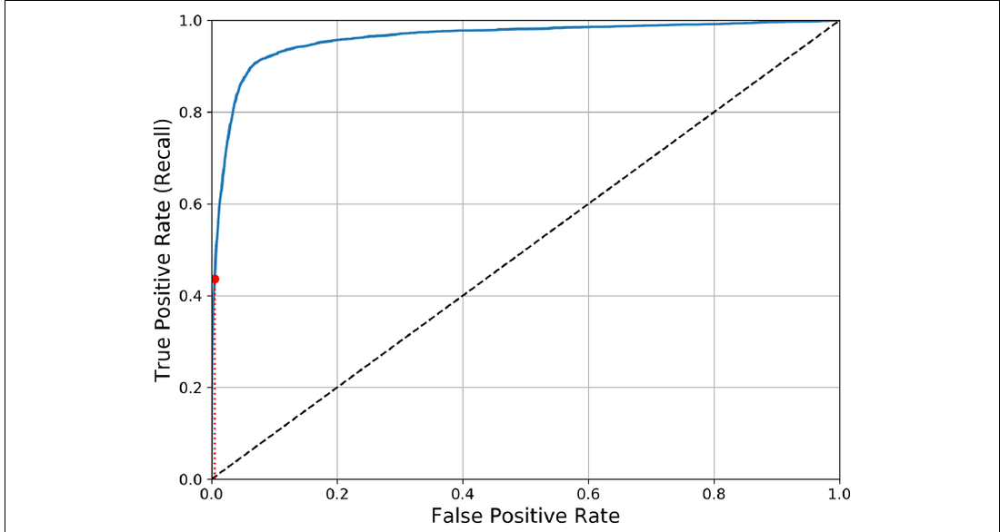

Introducción a la clasificación supervisada
Introducción a la clasificación supervisada
La clasificación supervisada es una de las tareas más comunes en ciencia de datos y aprendizaje automático. Aparece cuando queremos que un modelo aprenda a asignar una categoría a un caso nuevo a partir de ejemplos anteriores cuya respuesta correcta ya conocemos.
En esta unidad usaremos ideas centrales del flujo clásico de clasificación: definir el problema, separar entradas y etiquetas, entrenar un modelo, producir predicciones y evaluar sus errores. El notebook práctico posterior aterriza estas ideas con imágenes pequeñas de dígitos escritos a mano.
¿Qué es un problema de clasificación?
Un problema de clasificación consiste en predecir una categoría. La respuesta esperada no es un número continuo como un precio o una temperatura, sino una clase discreta: por ejemplo, spam o no spam, aprobado o rechazado, gato o perro, o un dígito entre 0 y 9.
La palabra supervisada significa que durante el entrenamiento contamos con ejemplos ya etiquetados. Es decir, no solo tenemos los datos de entrada, sino también la respuesta correcta para cada caso. El modelo usa esos ejemplos para aprender patrones que luego pueda aplicar sobre datos nuevos.
En el notebook de dígitos, cada ejemplo será una imagen pequeña. La clase correcta será el número que aparece en esa imagen. El problema no es dibujar el número ni reconstruir la imagen, sino responder: ¿qué dígito representa esta imagen?
La siguiente figura del capítulo de clasificación muestra por qué este problema es interesante incluso cuando las clases parecen simples. Todos los ejemplos son dígitos, pero no todos están escritos de la misma manera.

La figura ayuda a notar que una clase no corresponde a una única forma perfecta. Hay muchos estilos de escritura para un 5, un 8 o un 1. Un clasificador debe aprender patrones generales a partir de ejemplos variados, no solo memorizar una imagen ideal de cada dígito.
Clasificación binaria, multiclase, multietiqueta y multioutput
En clasificación binaria, solo existen dos clases posibles. Por ejemplo, en el caso de Bank Marketing del notebook anterior, la respuesta era si una persona aceptaba o no una oferta bancaria. Las clases eran yes y no.
En clasificación multiclase, existen más de dos clases posibles. El caso de los dígitos es multiclase porque el modelo debe elegir entre diez opciones: 0, 1, 2, 3, 4, 5, 6, 7, 8 y 9.
Esta diferencia importa porque algunas métricas se explican de forma más simple en problemas binarios, pero también se pueden usar en problemas multiclase calculándolas por clase. Por ejemplo, podemos preguntarnos: ¿qué tan bien detecta el modelo el dígito 3?, ¿lo confunde con el 8?, ¿predice demasiados 3 cuando no corresponde?
También existen dos variantes que conviene conocer, aunque en esta unidad las veremos solo de forma introductoria.
En clasificación multietiqueta, una misma observación puede tener más de una etiqueta verdadera al mismo tiempo. Por ejemplo, una imagen podría etiquetarse como contiene persona, contiene bicicleta y es exterior. La pregunta ya no es “elige una sola clase”, sino “marca todas las etiquetas que correspondan”.
En clasificación multioutput, el modelo produce varias salidas, y cada salida puede tener más de dos valores posibles. Un ejemplo típico es limpiar una imagen pixel por pixel: para cada pixel de salida se predice un valor. Este tipo de problema es más avanzado, por lo que aquí solo lo mencionaremos para ubicarlo dentro del mapa general de clasificación.
Datos de entrada y etiqueta esperada
En aprendizaje supervisado solemos separar los datos en dos objetos:
X: contiene las variables de entrada.y: contiene la etiqueta esperada o respuesta correcta.
En el caso de los dígitos, X contiene los valores numéricos que describen cada imagen. Como cada imagen tiene 8 x 8 pixeles, cada imagen se representa como 64 valores. Cada valor indica la intensidad de un pixel: valores bajos representan pixeles más claros y valores altos representan pixeles más marcados.
La variable y contiene la etiqueta real de cada imagen. Si una fila de X representa una imagen del número ocho, entonces el valor correspondiente en y será 8.
Un error común es olvidar que el modelo no ve la imagen como una persona. El computador no ve “un ocho” de forma directa; ve una lista de números. El trabajo del modelo es aprender, desde esos números, qué patrones suelen corresponder a cada clase.
¿Qué aprende un modelo de clasificación?
Un modelo de clasificación aprende una regla aproximada para asociar entradas con clases. En el caso de imágenes de dígitos, intenta detectar patrones en los pixeles: qué zonas suelen estar activas en un 0, qué forma suele tener un 1, qué diferencias aparecen entre un 3 y un 8, y así sucesivamente.
Entrenar un modelo no significa memorizar una definición perfecta de cada dígito. Significa ajustar parámetros internos a partir de los ejemplos disponibles. Por eso es importante separar datos de entrenamiento y datos de prueba: queremos saber si el modelo puede generalizar a imágenes que no usó para aprender.
También es importante recordar que distintos modelos aprenden de formas distintas. Un modelo lineal puede funcionar bien si las clases se separan con reglas relativamente simples. Un ensamble de árboles puede capturar relaciones más complejas entre pixeles. Comparar modelos ayuda a entender cuál parece ajustarse mejor al problema y a los datos disponibles.
Predicciones correctas e incorrectas
Después de entrenar, el modelo puede producir predicciones para casos nuevos. Una predicción es correcta cuando coincide con la etiqueta real. Por ejemplo, si la imagen realmente era un 5 y el modelo predice 5, la predicción fue correcta.
Una predicción es incorrecta cuando el modelo elige una clase distinta de la real. Por ejemplo, si la imagen realmente era un 8 y el modelo predice 3, ocurrió un error de clasificación.
En problemas reales, no todos los errores tienen el mismo costo. En dígitos, confundir un 8 con un 3 puede servirnos para estudiar qué formas son ambiguas. En otros contextos, como salud, seguridad o finanzas, una confusión puede tener consecuencias mucho más importantes. Por eso evaluar bien un clasificador es parte central del trabajo.
¿Por qué necesitamos evaluar un clasificador?
Necesitamos evaluar un clasificador porque entrenar un modelo no garantiza que funcione bien. Un modelo podría aprender patrones útiles, pero también podría ajustarse demasiado a los ejemplos de entrenamiento o cometer errores sistemáticos en ciertas clases.
Evaluar solo con los datos usados para entrenar suele dar una impresión demasiado optimista. Es como estudiar con una pauta y luego rendir exactamente la misma prueba: el resultado no necesariamente muestra comprensión general. Por eso reservamos un conjunto de prueba, que funciona como una evaluación con ejemplos no vistos durante el entrenamiento.
Las métricas resumen distintos aspectos del comportamiento del modelo. La accuracy indica la proporción global de aciertos, pero puede ocultar qué clases se confunden. La matriz de confusión muestra el detalle de esos errores. Precisión, recall y F1-score permiten mirar el desempeño por clase con más cuidado.
Por qué accuracy no siempre es suficiente
La accuracy es atractiva porque se entiende rápido: mide cuántas predicciones fueron correctas. El problema es que puede ocultar fallas importantes.
Imagina un problema donde solo 5 de cada 100 imágenes corresponden al dígito 5. Un clasificador que siempre responda “no es 5” tendría 95% de accuracy, pero no detectaría ningún 5. En ese caso, el número global parece alto, aunque el modelo sea inútil para el objetivo real.
Por eso, además de accuracy, revisamos la matriz de confusión, precisión, recall, F1-score y curvas como precision-recall o ROC. Cada herramienta responde una pregunta distinta sobre los errores.
Matriz de confusión
La matriz de confusión es una tabla que compara las etiquetas reales con las predicciones del modelo. Es una de las herramientas más útiles para entender errores de clasificación.
Antes de pasar a la versión multiclase, conviene mirar una matriz binaria ilustrada. La figura separa los casos según dos preguntas: cuál era la clase real y qué predijo el modelo.

En esta imagen, las filas separan casos reales negativos y positivos, mientras que las columnas separan predicciones negativas y positivas. La diagonal contiene los aciertos: verdaderos negativos (TN) y verdaderos positivos (TP). Las otras dos celdas son errores: falsos positivos (FP) y falsos negativos (FN).
Verdaderos positivos, falsos positivos, verdaderos negativos y falsos negativos
En clasificación binaria solemos nombrar las cuatro celdas de la matriz de confusión:
- Verdadero positivo (TP): el caso era positivo y el modelo predijo positivo.
- Falso positivo (FP): el caso era negativo, pero el modelo predijo positivo.
- Verdadero negativo (TN): el caso era negativo y el modelo predijo negativo.
- Falso negativo (FN): el caso era positivo, pero el modelo predijo negativo.
En el ejemplo “¿esta imagen es un 5?”, un falso positivo sería una imagen que no era 5 pero fue marcada como 5. Un falso negativo sería una imagen que sí era 5, pero el modelo no la detectó.
Estos nombres importan porque precisión, recall y F1-score se calculan a partir de ellos.
En una matriz de confusión multiclase:
- Cada fila representa la clase real.
- Cada columna representa la clase predicha por el modelo.
- La diagonal principal contiene los aciertos, porque ahí la clase real y la clase predicha coinciden.
- Los valores fuera de la diagonal son errores, porque muestran casos donde el modelo predijo una clase distinta de la real.
Por ejemplo: si en la fila del dígito 8 y la columna del dígito 3 aparece un valor 5, significa que cinco imágenes cuyo valor real era 8 fueron clasificadas por el modelo como 3.
Esta tabla permite ver errores que el accuracy oculta. Dos modelos pueden tener una accuracy parecida, pero uno puede confundirse mucho con el dígito 9 y otro puede confundirse más con el dígito 4. Si solo miramos el porcentaje total de aciertos, esa diferencia queda escondida.
Al leer una matriz de confusión, conviene partir por la diagonal para ver los aciertos principales y luego mirar las celdas grandes fuera de la diagonal. Esas celdas suelen indicar pares de clases que el modelo encuentra difíciles de separar.
El capítulo también muestra una versión visual de errores multiclase, donde las celdas más claras representan confusiones más frecuentes.

Esta forma de visualizar la matriz es útil porque permite detectar patrones de error rápidamente. Si una columna aparece muy clara, muchas imágenes de distintas clases están siendo predichas como esa clase. Si una fila tiene varias celdas claras fuera de la diagonal, esa clase real está siendo confundida con varias otras.
Accuracy
La accuracy mide qué proporción de predicciones fueron correctas.
accuracy = número de predicciones correctas / número total de prediccionesEn palabras simples: si el modelo clasifica 100 imágenes y acierta 94, su accuracy es 94 / 100 = 0.94.
La accuracy es fácil de entender, pero no siempre basta. Si queremos saber qué dígitos se confunden, la accuracy no nos dice cuáles fueron los errores. Por eso la combinamos con la matriz de confusión y con métricas por clase.
Precisión
La precisión responde esta pregunta: cuando el modelo predice una clase, ¿cuántas de esas predicciones eran realmente correctas?
precisión = verdaderos positivos / (verdaderos positivos + falsos positivos)En clasificación multiclase, podemos calcular precisión para cada clase. Por ejemplo, precisión para el dígito 3 significa: de todas las imágenes que el modelo predijo como 3, cuántas realmente eran 3.
Una precisión baja para una clase indica que el modelo está usando esa etiqueta con demasiada facilidad o confundiendo otras clases con ella. Por ejemplo, si predice muchos 3 que en realidad eran 8, la precisión del 3 puede bajar.
La siguiente figura introduce una idea importante: muchos clasificadores producen un puntaje o score, y una regla de decisión decide desde qué punto una predicción se considera positiva.

Si movemos el umbral hacia la derecha, el modelo exige más evidencia antes de predecir positivo. Eso suele aumentar la precisión, porque hay menos positivos predichos con poca confianza, pero también puede bajar el recall, porque algunos positivos reales dejan de ser detectados. Si movemos el umbral hacia la izquierda, ocurre lo contrario: el modelo detecta más positivos, pero también puede cometer más falsos positivos.
El trade-off entre precisión y recall
La precisión y el recall suelen estar en tensión. Si hacemos que el modelo sea más estricto para predecir positivo, puede equivocarse menos cuando predice positivo, pero también puede dejar pasar casos positivos reales. Eso sube la precisión y baja el recall.
Si hacemos que el modelo sea más permisivo, detectará más positivos reales, pero también puede aceptar más falsos positivos. Eso sube el recall y puede bajar la precisión.
No hay una respuesta universal sobre cuál métrica priorizar. Depende del problema. En un filtro de contenido riesgoso, quizá preferimos alta precisión para no bloquear contenido válido. En una alerta médica inicial, quizá preferimos alto recall para no dejar casos posibles sin revisar.
Umbral de decisión
Muchos clasificadores no solo entregan una clase, sino también un score o una probabilidad. El umbral de decisión transforma ese score en una clase final.
Por ejemplo, si el modelo entrega un score alto para “es 5”, podemos marcar la imagen como positiva. Si exigimos un umbral más alto, el modelo necesitará más evidencia antes de decir “sí, es 5”. Si usamos un umbral más bajo, será más fácil que responda positivo.
El umbral no cambia lo que el modelo aprendió, pero sí cambia cómo convertimos sus scores en decisiones. Por eso es una herramienta importante cuando el costo de los falsos positivos y falsos negativos no es el mismo.
Recall
El recall responde otra pregunta: de todos los casos reales de una clase, ¿cuántos logró encontrar el modelo?
recall = verdaderos positivos / (verdaderos positivos + falsos negativos)En clasificación multiclase, recall para el dígito 3 significa: de todas las imágenes que realmente eran 3, cuántas logró clasificar correctamente como 3.
Un recall bajo para una clase indica que el modelo está dejando escapar muchos casos reales de esa clase. Por ejemplo, si muchas imágenes reales de 3 son predichas como 8, el recall del 3 será bajo.
F1-score
El F1-score combina precisión y recall en una sola métrica.
F1 = 2 * (precisión * recall) / (precisión + recall)En palabras simples, F1 es alto cuando precisión y recall son altos al mismo tiempo. Si una de las dos métricas es baja, el F1-score también baja. Esto lo hace útil cuando queremos equilibrar dos tipos de error: predecir una clase cuando no corresponde y no detectar casos reales de esa clase.
En problemas multiclase, F1 también puede calcularse por clase. Luego se puede promediar. Un promedio común es macro, que calcula la métrica para cada clase y luego promedia dando el mismo peso a todas las clases.
La relación entre precisión y recall también puede visualizarse como curvas. Esta figura muestra cómo ambas métricas cambian al mover el umbral de decisión.

La curva azul representa precisión y la verde representa recall. Lo importante no es memorizar la forma exacta de las curvas, sino entender la tensión: al cambiar la regla de decisión podemos favorecer una métrica, pero normalmente afectamos la otra. Por eso F1-score es útil cuando queremos una medida que combine ambas.
Curva precision-recall
La curva precision-recall dibuja directamente la precisión contra el recall para muchos umbrales posibles. Es especialmente útil cuando la clase positiva es poco frecuente o cuando nos importa mucho controlar falsos positivos y falsos negativos.
En vez de elegir un umbral a ciegas, la curva permite mirar qué combinaciones de precisión y recall están disponibles. Si queremos al menos 90% de precisión, podemos revisar qué recall tendríamos a ese nivel. Si queremos detectar la mayor cantidad posible de positivos, podemos observar cuánto cae la precisión al aumentar el recall.
Curva ROC y AUC
La curva ROC es otra herramienta para evaluar clasificadores binarios. En el eje vertical muestra la tasa de verdaderos positivos, que es otra forma de mirar el recall. En el eje horizontal muestra la tasa de falsos positivos.

La línea diagonal representa un comportamiento parecido al azar. Una curva más cercana a la esquina superior izquierda indica un clasificador más útil: alto recall con baja tasa de falsos positivos.
El AUC resume el área bajo la curva ROC. Un valor cercano a 1.0 indica mejor separación entre positivos y negativos. Un valor cercano a 0.5 se parece más a un clasificador aleatorio. Aun así, AUC no reemplaza la interpretación del problema: en clases muy desbalanceadas, la curva precision-recall puede ser más informativa.
Análisis de errores
Analizar errores significa mirar con más detalle dónde falla el modelo. No basta con saber que la accuracy es 0.94; queremos saber qué clases se confunden, si los errores son razonables y qué podría hacerse para reducirlos.
En clasificación multiclase, la matriz de confusión ayuda a detectar pares problemáticos. Por ejemplo, si muchas imágenes reales de 8 se predicen como 3, podemos revisar esas imágenes y preguntarnos si la escritura es ambigua, si falta información o si el modelo necesita mejores variables.
El análisis de errores conecta las métricas con ejemplos reales. Es una parte fundamental del trabajo porque orienta las decisiones siguientes: recolectar más datos, mejorar el preprocesamiento, cambiar el modelo o ajustar el criterio de evaluación.
Qué conceptos veremos en los notebooks
Los notebooks de esta unidad aplican estos conceptos con distintos focos.
El notebook de Bank Marketing trabaja un problema binario aplicado, con preparación de datos tabulares, pipelines, validación y ajuste de threshold.
El notebook de dígitos trabaja clasificación multiclase. Ahí veremos cómo una imagen pequeña se transforma en 64 valores numéricos, cómo se separan X e y, cómo se entrena un clasificador con .fit() y cómo se generan predicciones con .predict().
El notebook de métricas binarias toma el mismo dataset de dígitos, pero lo convierte en la pregunta “¿es un 5?”. Ese formato permite estudiar con más calma TP, FP, TN, FN, precisión, recall, F1-score, umbrales, curva precision-recall, curva ROC y AUC.
La meta no es solo ejecutar código. La meta es entender qué significa cada etapa del proceso: qué ve el computador, qué aprende el modelo, qué representa una predicción y cómo interpretar los errores cuando el modelo se equivoca.
Referencias
Géron, A. (2019). Hands-on machine learning with Scikit-Learn, Keras, and TensorFlow: Concepts, tools, and techniques to build intelligent systems (2nd ed.). O’Reilly Media. https://www.oreilly.com/library/view/hands-on-machine-learning/9781492032632/
Scikit-learn developers. (2024). 3.3. Metrics and scoring: Quantifying the quality of predictions. Scikit-learn documentation. https://scikit-learn.org/stable/modules/model_evaluation.html
Scikit-learn developers. (2024). sklearn.metrics.confusion_matrix. Scikit-learn documentation. https://scikit-learn.org/stable/modules/generated/sklearn.metrics.confusion_matrix.html
Scikit-learn developers. (2024). sklearn.metrics.precision_recall_fscore_support. Scikit-learn documentation. https://scikit-learn.org/stable/modules/generated/sklearn.metrics.precision_recall_fscore_support.html
Scikit-learn developers. (2024). sklearn.metrics.roc_curve. Scikit-learn documentation. https://scikit-learn.org/stable/modules/generated/sklearn.metrics.roc_curve.html
Scikit-learn developers. (2024). sklearn.metrics.roc_auc_score. Scikit-learn documentation. https://scikit-learn.org/stable/modules/generated/sklearn.metrics.roc_auc_score.html